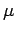
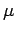
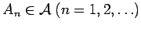
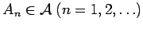

Inhalt Index DeskTop Bronstein

 Funktionalanalysis Maß und Lebesgue-Integral Sigma-Algebren und Maße
Funktionalanalysis Maß und Lebesgue-Integral Sigma-Algebren und Maße


Eine auf einer  -Algebra
-Algebra  definierte Funktion heißt Maß, wenn
definierte Funktion heißt Maß, wenn
Die Eigenschaft c) heißt  -Additivität des Maßes. Ist  ein Maß auf
-Additivität des Maßes. Ist  ein Maß auf  und sind , dann ist (Monotonie). Wenn  und , dann (Stetigkeit von unten).
und sind , dann ist (Monotonie). Wenn  und , dann (Stetigkeit von unten).
Seien  eine
eine  -Algebra von Teilmengen aus
-Algebra von Teilmengen aus  und ein Maß auf . Das Tripel heißt Maßraum, und die Mengen aus
und ein Maß auf . Das Tripel heißt Maßraum, und die Mengen aus  heißen meßbar oder
heißen meßbar oder  -meßbar.
-meßbar.
| Beispiel A |
|
Seien |
| Beispiel B |
|
DIRAC-Maß: Seien |
| Beispiel C |
|
LEBESGUE-Maß:Seien
Die Elemente aus |
Hinweis: Man sagt in der Maß- und Integrationstheorie, daß eine Behauptung (Eigenschaft, Bedingung) bezüglich eines Maßes fast überall oder -fast überall auf einer Menge  gilt, wenn die Menge, auf der sie nicht erfüllt ist, das Maß Null hat. Man schreibt dafür auch die Abkürzung f.ü. bzw. -f.ü. Also, ist etwa
gilt, wenn die Menge, auf der sie nicht erfüllt ist, das Maß Null hat. Man schreibt dafür auch die Abkürzung f.ü. bzw. -f.ü. Also, ist etwa  das LEBESGUE-Maß auf
das LEBESGUE-Maß auf  , sind A, B zwei disjunkte Mengen mit und ist f eine Funktion auf
, sind A, B zwei disjunkte Mengen mit und ist f eine Funktion auf  mit und , dann ist -f.ü. auf
mit und , dann ist -f.ü. auf  genau dann, wenn .
genau dann, wenn .